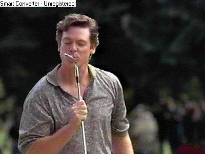
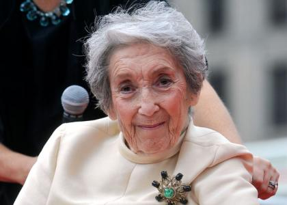
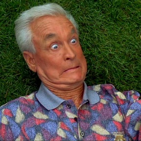

-
Happy Gilmore
Adam Sandler as Happy Gilmore, a young man who wants to be a professional ice hockey player.

-
Shooter McGavin
Christopher McDonald as Shooter McGavin, an arrogant golfer who is the top player on the "Pro Golf Tour" (fictionalized golf tour based on the PGA Tour).
 -
Virgina Venit
Julie Bowen as Virginia Venit, a public relations director for the Pro Golf Tour.

-
Grandma Gilmore
Frances Bay as Grandma Gilmore.
 -
Bob Barker
Bob Barker as himself
 -
Otto
Congrats! You're Otto, Happy's caddy.